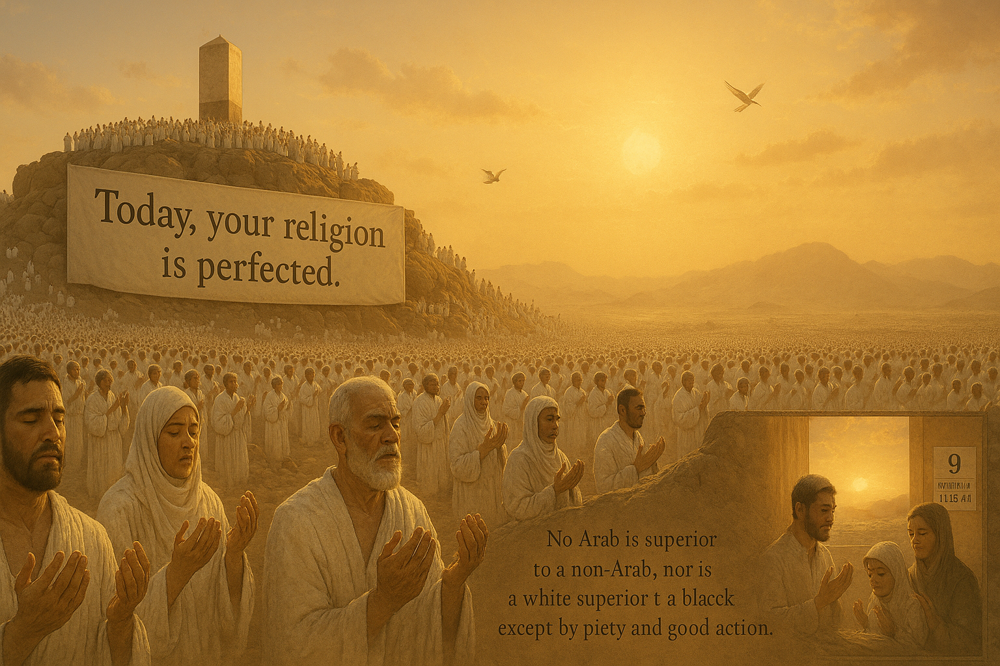

|
|
|
|  | |
| Arafah Day – A Day of Mercy, Forgiveness, and Completion of Faith | |
| The Day of Arafah, falling on the 9th of Dhul Hijjah, is the most sacred day of Hajj. It is the day when Prophet Muhammad ﷺ delivered his Farewell Sermon, affirming the completion of Islam. For pilgrims, standing on Mount Arafah is the essence of Hajj. For non-pilgrims, fasting on this day is highly rewarded — expiating the sins of the previous and coming year. "There is no day on which Allah frees more people from the Fire than the Day of Arafah." (Muslim) | |
| Reflect, Fast, and Share Blessings | |